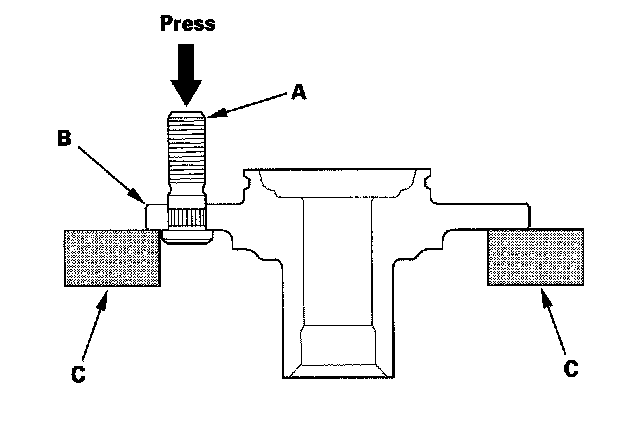

Wheel Stud / Lug Nut: Service and Repair
Wheel Bolt ReplacementNOTICE:
^ Do not use a hammer or air or electric impact tools to remove and install the wheel bolts.
^ Be careful not to damage the threads of the wheel bolts.
1. Remove the front or rear hub bearing unit.
2. Separate the wheel bolt (A) from the hub (B) using a hydraulic press. Support the hub with hydraulic press attachments (C) or equivalent tools.
NOTE: Before installing the new wheel bolt, clean the mating surface on the bolt and the hub.

3. Insert the new wheel bolt into the hub while aligning the splined surfaces on the hub hole with the wheel bolt.
NOTE:
^ Degrease all around the wheel bolt and the threaded section of the nut.
^ Make sure the wheel bolt is installed vertically in relation to the hub disc surface.
4. Install the wheel bolt using a hydraulic press until the wheel bolt shoulder is fully seated.
5. Install the front or rear hub bearing unit.
NOTE: If you cannot tighten the wheel nut to the specified torque value when installing the wheel, replace the hub or hub bearing unit as an assembly.